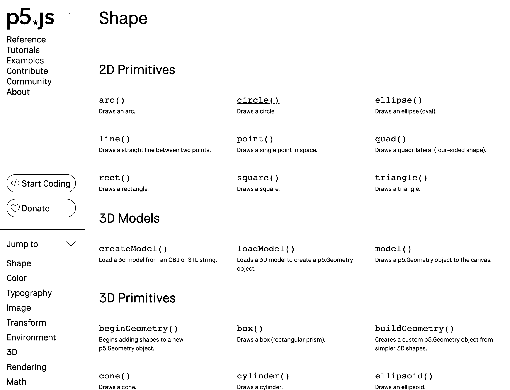
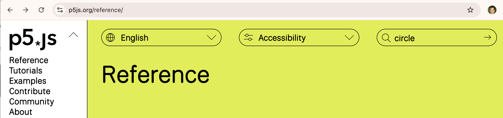
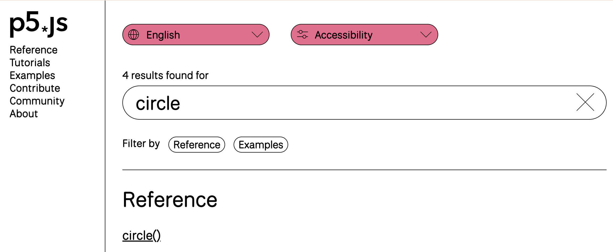
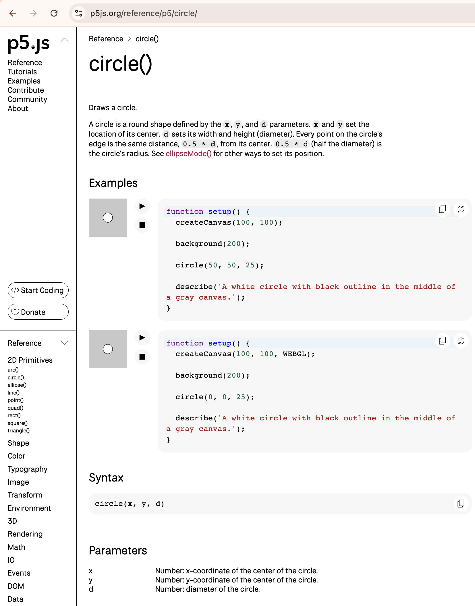

Hvilke funktioner findes der?
Hvorefter man kommer ind på denne side. Hvis man f.eks. vil finde ud af hvordan man tegner en cirkel, så kan man i venstre side vælge Shapes -> 2D Primitives -> Circle
Alternativt kan man søge efter circle øverst til højre.
 Her er documentationen for en cirkel:
På denne side er en forklaring af den funktion man har søgt på (i vores tilfælde en cirkel), et eksempel (hvor man kan vælge edit og prøve funktionen af), syntaksen for hvordan man bruger funktionen (som der ses ovenfor tager circle funktionen tre argumenter) samt en forklaring af hvad argumenterne er (i vores tilfælde er det x koordinat, y koordinat samt diameteren)
Which functions are available?
After which you will land on this page. If you, for example, want to find out how to draw a circle, you can select Shapes -> 2D Primitives -> Circle on the left side.
Alternatively, you can search for circle at the top right.
Here is the documentation for a circle:
On this page is an explanation of the function you have searched for (in our case a circle), an example (where you can select edit and try out the function), the syntax for how to use the function (as seen above, the circle function takes three arguments) and an explanation of what the arguments are (in our case, it is the x coordinate, y coordinate, and the diameter).